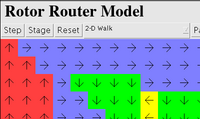
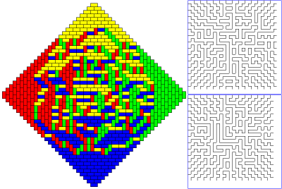
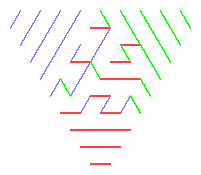

Produced by Hal Canary and Jim Propp
More information about these applets can be found here.

Rotor Router Applet v1.0
(July 2004)

TOAD Shuffler Applet (v1.3)

Kyle Petersen's Grove Shuffler Applet (v0.3, 2003-10-10)